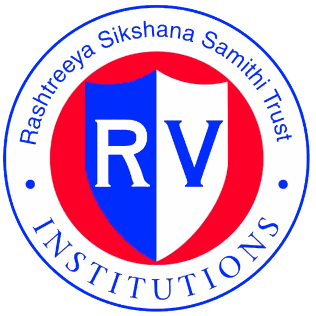
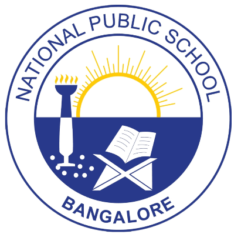

|  | I spent 14 years at NPS, which really shaped who I am today. I got into RVCE through COMED-K and am now pursuing a B.E. It’s been quite the journey transitioning from school life to the fast-paced world of engineering, but I’m excited to see where it takes me! |  |